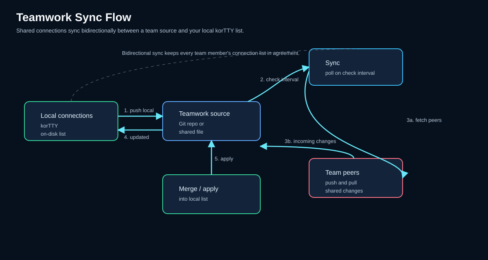

Teamarbeit (gemeinsame Verbindungen)¶
Teilen Sie SSH-Verbindungen mit Ihrem Team, indem Sie sie aus einem Git-Repository oder einer freigegebenen Datei synchronisieren. Teamwork-Quellen werden zusammen mit Ihren lokalen Verbindungen in den Connection Manager geladen, automatisch synchronisiert und sicher von Inline-Passwörtern befreit, sodass Anmeldeinformationen nur aus Ihrem lokalen verschlüsselten Speicher stammen.

Übersicht¶
Teamwork ermöglicht es Teams, eine zentrale Bibliothek von Verbindungskonfigurationen zu verwalten:
- Git-Repositorys – Klonen Sie ein Git-Repository, das eine
kortty-teamwork-connections.xml-Datei (oder eine ältere Dateiconnections.xml) enthält, und bleiben Sie mit diesem synchron. - Shared files — Load connections from a local or network path (read-only or read-write).
- Automatic sync — Background syncing at a configurable interval checks for updates.
- Credential security — Shared connections do NOT carry inline passwords; only credential IDs and SSH key references.
- Local overrides — Your local credentials and SSH keys are merged with shared connection definitions.
- Read-only mode — Mark sources as read-only to prevent accidental writes back.
Einrichten von Teamwork-Quellen¶
Open Teamwork → Teamwork Settings… (or Configuration → Global Settings… → Teamwork) to configure sources.
Fügen Sie eine Quelle hinzu¶
- Klicken Sie auf Hinzufügen, um eine neue Quelle zu erstellen.
- Wählen Sie die Quelle Typ:
- Git — Clone from an HTTPS, SSH, or git:// URL.
- Shared File — Read from a local or network path (e.g.,
file:///mnt/share/connections.xmlor//host/share/connections.xml). - Geben Sie den Standort ein:
- Für Git: die Klon-URL.
- Für freigegebene Dateien: ein lokaler/Netzwerk-Dateipfad (kann ein file://-URI oder ein UNC-Pfad sein).
- Legen Sie das Prüfintervall fest (1–1440 Minuten; Standard: 15).
- Aktivieren Sie optional Schreibgeschützt, um Rückschreibvorgänge zu verhindern (nur Git-Quellen).
- Klicken Sie zum Speichern auf OK.
Quellen verwalten¶
Im Dialogfeld „Teamwork-Einstellungen“ werden alle Quellen mit Typ, Standort und Synchronisierungsintervall aufgelistet:
| Spalte | Bedeutung |
|---|---|
| Geben Sie | ein Git oder Shared File |
| Standort | Repository-URL oder Dateipfad |
| Intervall | Minuten zwischen Synchronisierungsprüfungen |
| Aktiviert | Umschalten zum Aktivieren/Deaktivieren ohne Löschen |
Verwenden Sie die Schaltflächen, um: - Hinzufügen – Erstellen Sie eine neue Quelle. - Bearbeiten – Ändern Sie die ausgewählte Quelle. - Entfernen – Die ausgewählte Quelle löschen. - Aktivieren/Deaktivieren – Schaltet den aktivierten Status für die ausgewählten Quellen um.
Legen Sie unten das Standardprüfintervall fest (gilt für neue Quellen, die keins angeben).
So funktioniert die Synchronisierung¶
Hintergrundsynchronisierung¶
Sobald Sie die Teamwork-Einstellungen gespeichert haben:
- KorTTY startet einen Hintergrundsynchronisierungsthread.
- Alle N Minuten (basierend auf dem Mindestintervall zwischen aktivierten Quellen) geschieht Folgendes:
- Zieht/klont jede Quelle (Git) oder liest die Datei (Shared File).
- Lädt die XML-Verbindungen.
- Führt die Ergebnisse im Cache und im Verbindungsmanager zusammen.
- Wenn eine Quellaktualisierung fehlschlägt, wird die vorherige zwischengespeicherte Version beibehalten.
Manuelle Synchronisierung¶
Verwenden Sie Teamwork → Teamwork-Einstellungen… und klicken Sie auf OK, um sofort eine Synchronisierung auszulösen.
Konflikterkennung¶
Bei jeder Synchronisierung wird ein Versionstoken aufgezeichnet: - Git – Der aktuelle Commit-Hash. - Freigegebene Datei – Der zuletzt geänderte Zeitstempel der Datei.
Wenn sich das Versionstoken einer gemeinsam genutzten Verbindung zwischen Synchronisierungen ändert, wurde eine neue Version abgerufen. Wenn Sie lokale Änderungen an einer Teamwork-Verbindung vorgenommen haben und die Quelle mit einer widersprüchlichen Änderung aktualisiert wird, bleiben die lokalen Änderungen erhalten (kein automatisches Überschreiben).
Gemeinsam genutztes Verbindungsdateiformat¶
Erstellen Sie eine kortty-teamwork-connections.xml-Datei (oder connections.xml für Abwärtskompatibilität) im Stammverzeichnis Ihres Git-Repositorys oder Ihrer freigegebenen Datei:
<?xml version="1.0" encoding="UTF-8"?>
<connections>
<connection id="prod-web-1">
<name>Prod Web Server 1</name>
<host>web1.example.com</host>
<port>22</port>
<username>deploy</username>
<group>Production/Web</group>
<authMethod>SSH_KEY</authMethod>
<sshKeyId>key-prod-deploy</sshKeyId>
<credentialId>cred-prod-user</credentialId>
</connection>
</connections>
Inline-Geheimnisse nicht einbeziehen
Teamwork-Verbindungen dürfen nicht encryptedPassword, privateKeyPath oder privateKeyPassphrase enthalten. Stattdessen:
- Verwenden Sie credentialId, um auf gespeicherte Anmeldeinformationen in Sicherheit → Anmeldeinformationen… zu verweisen.
- Verwenden Sie sshKeyId, um auf einen gespeicherten SSH-Schlüssel in Sicherheit → SSH-Schlüssel… zu verweisen.
Wenn in der freigegebenen Datei Inline-Geheimnisse gefunden werden, entfernt KorTTY diese automatisch (sie werden nicht geladen).
Teamwork-Verbindungen nutzen¶
Sobald eine Quelle synchronisiert ist:
- Öffnen Sie Verbindungen verwalten… (oder drücken Sie Ctrl+M).
- Teamwork-Verbindungen werden in der Baumstruktur mit der Bezeichnung [Teamwork] und ihrer Quell-ID angezeigt.
- Klicken Sie auf eine Teamwork-Verbindung, um sie anzuzeigen oder zu verwenden.
- Kann nicht direkt bearbeitet werden – Teamwork-Verbindungen sind schreibgeschützt, es sei denn, ihre Quelle ist als beschreibbar markiert und Sie besitzen Bearbeitungsrechte (bestimmt durch
teamworkRole).
Lokale Überschreibungen¶
- Die zusammengeführten Anmeldeinformationen und SSH-Schlüsselreferenzen werden aus Ihrem lokalen Speicher aufgelöst.
- Wenn lokal keine Anmeldeinformationen oder Schlüssel gefunden werden, werden Sie beim Herstellen der Verbindung aufgefordert, diese anzugeben.
- Ihre lokale Kopie einer Teamwork-Verbindung kann die Authentifizierung außer Kraft setzen, indem sie andere Anmeldeinformationen oder Schlüssel zuweist.
Quellen unterscheiden¶
Im Connection Manager werden Teamwork-Verbindungen anhand ihrer Quell-ID gekennzeichnet. Bewegen Sie den Mauszeiger über die Verbindungseigenschaften oder überprüfen Sie sie, um zu sehen, von welcher Teamwork-Quelle sie stammt.
Git-Repository-Setup¶
So teilen Sie Verbindungen über Git:
- Erstellen Sie ein Repository (z. B.
ssh-connections). - Fügen Sie eine
kortty-teamwork-connections.xml-Datei mit Ihren Verbindungsdefinitionen zum Stammverzeichnis hinzu. - Commit und Push.
- Teilen Sie die Repository-URL (HTTPS oder SSH) mit den Teammitgliedern.
- Teammitglieder fügen die URL unter Teamwork → Teamwork-Einstellungen… → Hinzufügen hinzu.
SSH vs. HTTPS¶
- HTTPS – Funktioniert ohne SSH-Schlüsseleinrichtung; Möglicherweise ist ein GitHub Personal Access Token oder ein Benutzername/Passwort erforderlich (bewahren Sie das Token sicher auf).
- SSH – Erfordert
gitund einen lokalen SSH-Schlüssel in~/.ssh/id_rsa(oder konfiguriert inssh-add).
Beispiel-Repository-Layout¶
Optional: Versionen in Git speichern¶
Verwenden Sie den Commit-Hash als Versionstoken, damit KorTTY Updates erkennen kann:
Einrichtung einer freigegebenen Datei¶
So teilen Sie Verbindungen über eine Datei:
- Exportieren Sie Ihre Verbindungen in eine Datei: Verbindungen → Exportieren… → Verbindungen auswählen → Speichern als
.xml. - Platzieren Sie die Datei auf einem freigegebenen Netzwerkpfad (z. B.
//server/share/connections.xml). - Legen Sie die Lese-/Schreibberechtigungen nach Bedarf fest.
- Teammitglieder fügen den Dateipfad unter Teamwork → Teamwork-Einstellungen… → Hinzufügen hinzu.
Beispielpfade¶
| Plattform | Pfadformat |
|---|---|
| Windows (Netzwerkfreigabe) | //server/share/connections.xml oder file:////server/share/connections.xml |
| Linux/macOS (NFS-Mount) | /mnt/teamshare/connections.xml oder file:///mnt/teamshare/connections.xml |
| SMB/CIFS (gemountet) | /Volumes/teamshare/connections.xml (macOS) |
Sicherheitsüberlegungen¶
Anmeldeinformationen sind nur lokal
Gemeinsame Verbindungen übertragen keine Passwörter oder Schlüsselpassphrasen. Ihr lokaler verschlüsselter Speicher (Master-Passwort geschützt) enthält die tatsächlichen Geheimnisse. Teammitglieder müssen ihre eigenen Anmeldeinformationen lokal eingerichtet haben.
Git-Repositorys sollten keine Geheimnisse speichern
Übergeben Sie niemals Passwörter, SSH-Schlüsselinhalte oder API-Tokens an das Teamwork-Repository. Verwenden Sie nur Anmeldeinformations-IDs und Schlüsselreferenzen.
Dateiberechtigungen
Beschränken Sie den Lese-/Schreibzugriff für freigegebene Dateien auf Netzwerkpfaden nur auf Teammitglieder. Stellen Sie sicher, dass der Pfad nicht allgemein lesbar ist.
Prüfpfad
Für Git-basierte Teamarbeit bietet der Commit-Verlauf einen Prüfpfad. Überprüfen Sie die Änderungen, bevor Sie sie abrufen, indem Sie den Remote-Zweig überprüfen.
Fehlerbehebung¶
Quelle wird nicht synchronisiert¶
- Öffnen Sie Teamwork → Teamwork-Einstellungen….
- Stellen Sie sicher, dass die Quelle Aktiviert ist.
- Überprüfen Sie, ob der Standort korrekt und zugänglich ist:
- Git – Führen Sie
git clone <url>zum Testen manuell aus. - Freigegebene Datei – Stellen Sie sicher, dass die Datei vorhanden und auf Ihrem Computer lesbar ist.
- Klicken Sie auf OK, um eine manuelle Synchronisierung auszulösen.
- Überprüfen Sie das Anwendungsprotokoll (
~/.kortty/kortty.log) auf Fehler.
Verbindungen werden angezeigt, aber Anmeldeinformationen fehlen¶
- Öffnen Sie Sicherheit → Anmeldeinformationen… und Sicherheit → SSH-Schlüssel….
- Stellen Sie sicher, dass die Anmeldeinformations-IDs oder SSH-Schlüssel-IDs in den gemeinsam genutzten Verbindungen lokal vorhanden sind.
- Wenn sie fehlen, fügen Sie sie manuell hinzu oder bitten Sie Ihren Teamadministrator, die IDs bereitzustellen.
Änderungen können nicht an das Git-Repository übertragen werden¶
- Stellen Sie sicher, dass die Git-URL SSH oder ein HTTPS-Token verwendet (nicht Benutzername/Passwort).
- Stellen Sie sicher, dass Ihr SSH-Schlüssel bei der Fernbedienung registriert ist (GitHub, GitLab usw.).
- Markieren Sie in den Teamwork-Einstellungen die Quelle als Schreibgeschützt, wenn Sie nicht zurückschreiben müssen.
Dateipfad wird nicht erkannt (Windows/UNC)¶
Verwenden Sie Schrägstriche oder das URI-Format „file://“:
//server/share/connections.xml✓\\server\share\connections.xml✗ (Backslashes werden möglicherweise nicht richtig analysiert)file:////server/share/connections.xml✓ (UNC-Notation)